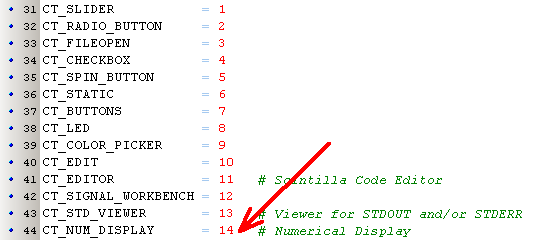
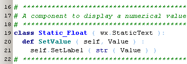
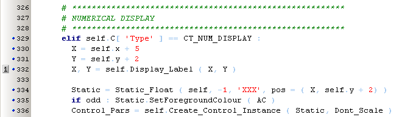
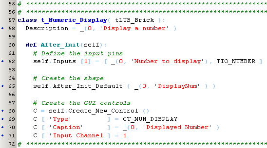
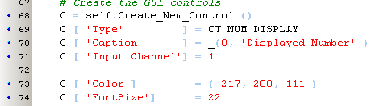

april 2008
Bricks, create Numeric Display 
Introduction
Suppose we want to display a numerical value and there's no numerical display control yet. Using an editbox as the control doesn't work, because an editbox requires a string as input, so it will fail when numbers are used as input.
The first thing to do is to claim an unique ID in bricks.py:

As wxPython doesn't have a numerical display yet, we've to create one. One of the simplest way to do this, is to derive the new control from wx.StaticText. And the only method we've to add/override is the SetValue method. So our new control might look like this:

As this component is so simple, we put in directly in PyLab_Works_appform.py, where also the control will be created and handled. Now we're going to use this component, to create the new control:

Now we have the control, we can make a Brick, containing this component:

The above Brick is very straight forward, except line 71:
You can spruce up the component, giving it another color, a larger font etc., like this ...

... but then of course you have to expand the Numerical Display control to act on this issues.